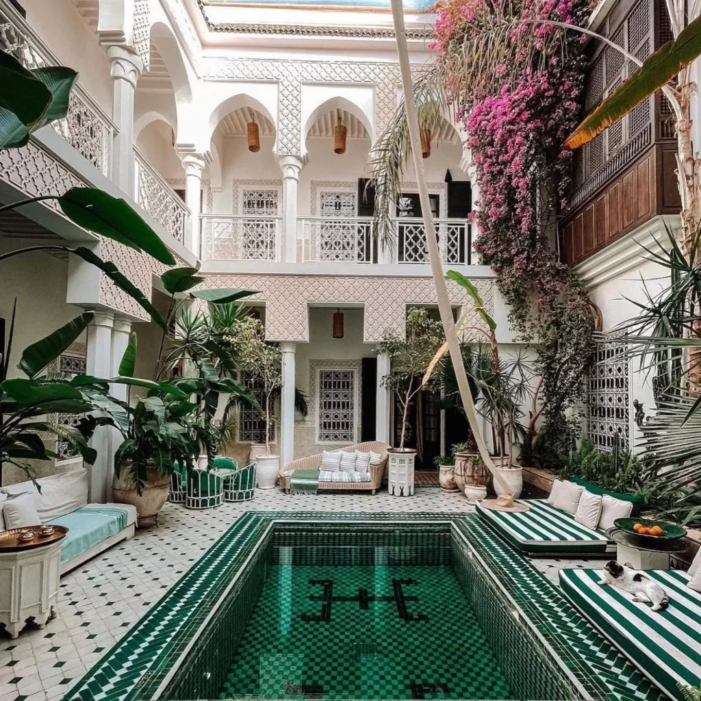
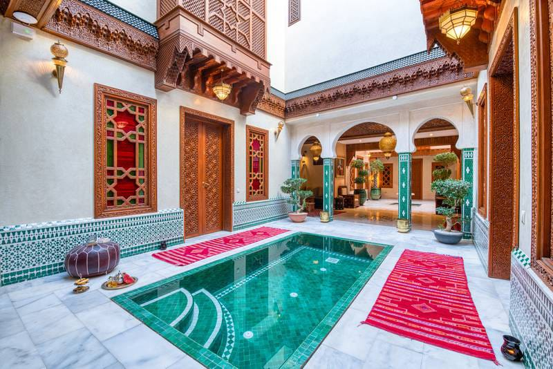
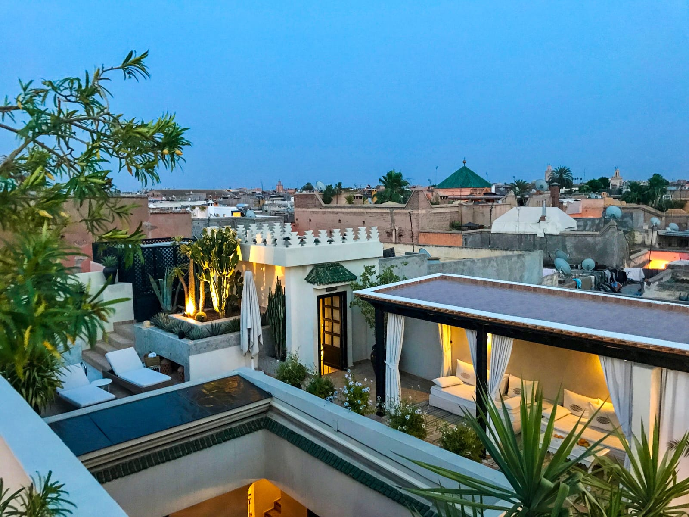
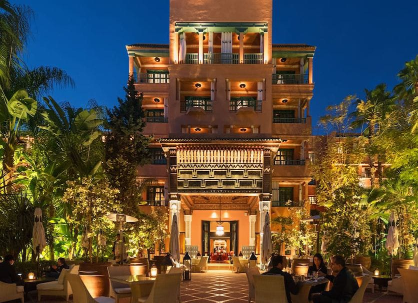
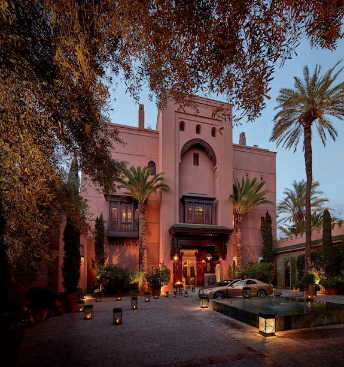
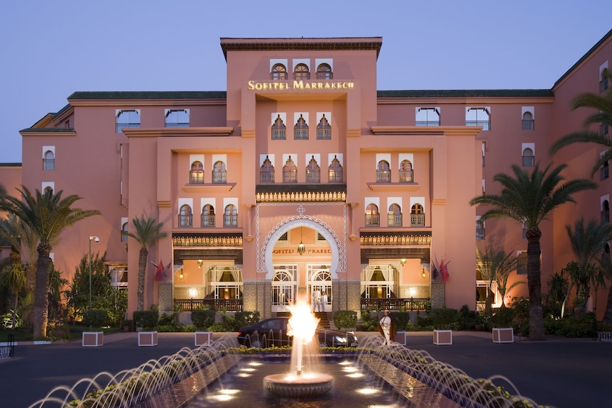

Riads et Hôtels populaires
Riads et Hôtels populaires

Le Riad Yasmine est l'un des établissements les plus emblématiques et photographiés de Marrakech. Situé dans le quartier de Bab Taghzout, au nord de la Médina, il incarne parfaitement le mélange entre l'architecture marocaine traditionnelle et une esthétique "boutique hotel" moderne. Voici une description détaillée de ce lieu :

Le Riad BE Marrakech est bien plus qu’un simple hôtel ; c’est une véritable œuvre d’art immersive située dans le quartier de Bab Doukkala, au cœur de la Médina. Il est célèbre pour son esthétique vibrante qui célèbre l'artisanat marocain avec une touche de sophistication moderne. Voici une description détaillée de ce lieu unique :

Le Riad Kheirredine est régulièrement cité comme l'un des meilleurs établissements au monde sur les plateformes de voyage. Situé dans le quartier de Bab Doukkala, il se distingue de ses concurrents (comme le Yasmine ou le BE) par un positionnement nettement plus luxueux, spacieux et axé sur un service ultra-personnalisé. Voici une description précise de ce sanctuaire de haut standing :

La Mamounia n'est pas seulement un hôtel, c'est une légende vivante. Élu à plusieurs reprises "meilleur hôtel du monde", ce palace incarne la quintessence du luxe marocain. Situé à la lisière de la Médina (quartier de l'Hivernage), il s'étend sur un domaine historique de 13 hectares. Voici une description précise de ce lieu mythique :

Si La Mamounia est une légende, le Royal Mansour est souvent décrit comme le "Palace des Rois". Commandé par le Roi Mohammed VI lui-même, cet établissement a été conçu pour être une vitrine de l'excellence de l'artisanat marocain. Situé à deux pas de la place Jemaa el-Fna, il offre une expérience de luxe absolue, presque irréelle. Voici une description précise de ce chef-d'œuvre :

Le Sofitel Marrakech est l'un des piliers de l'hôtellerie de luxe dans le quartier chic de l'Hivernage. Contrairement au Royal Mansour ou à La Mamounia qui misent sur l'exclusivité absolue ou l'histoire royale, le Sofitel se distingue par son atmosphère vibrante, contemporaine et axée sur l'art de vivre. Il se divise en deux entités distinctes mais connectées : le Palais Impérial (plus traditionnel et majestueux) et le Lounge and Spa (plus moderne et festif).